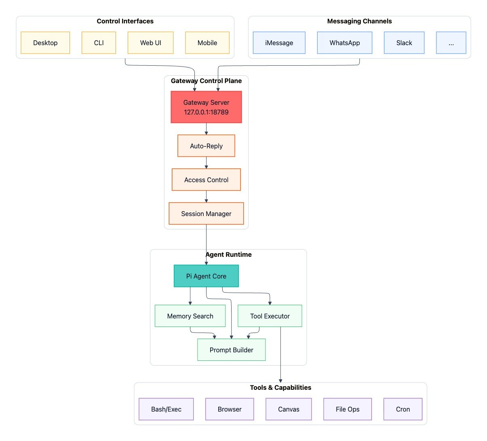
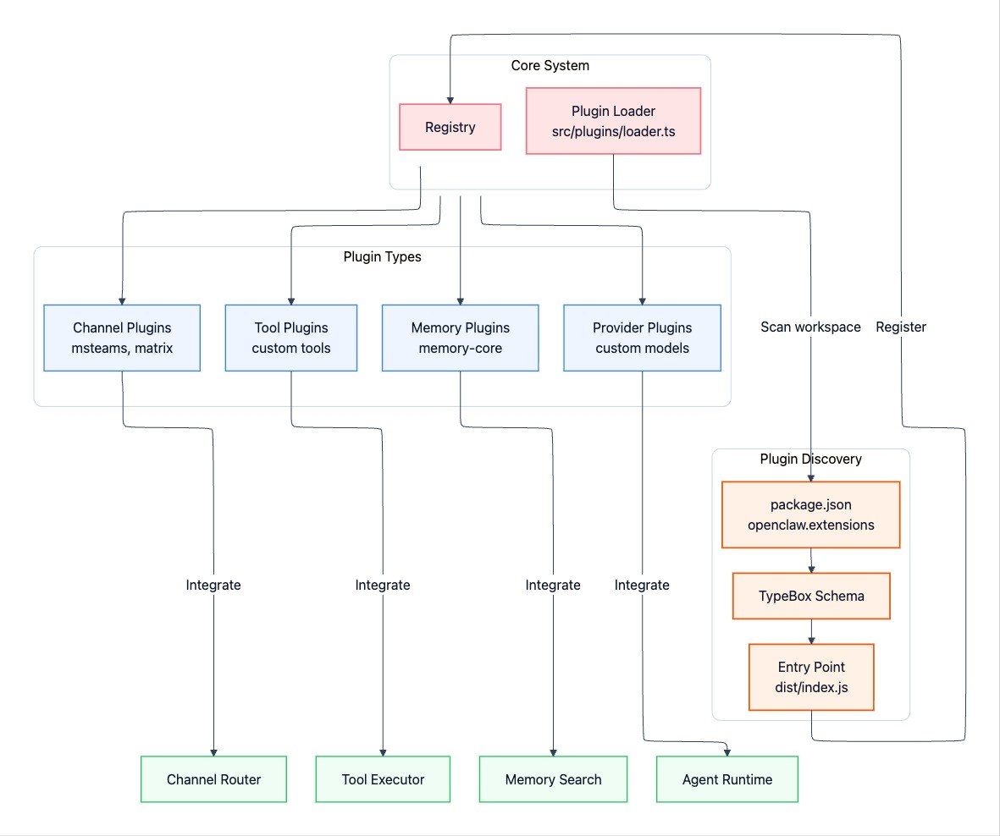
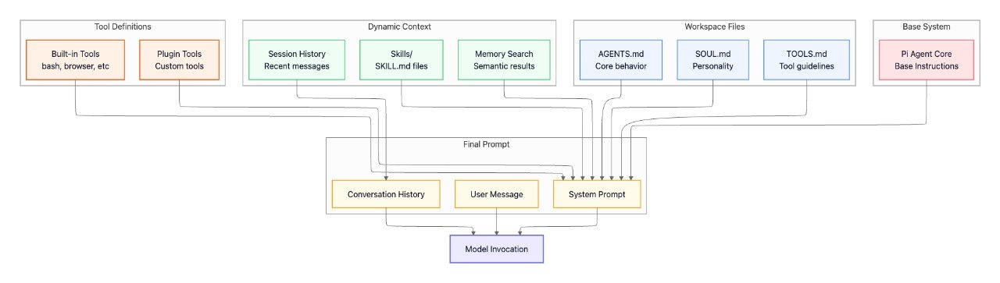
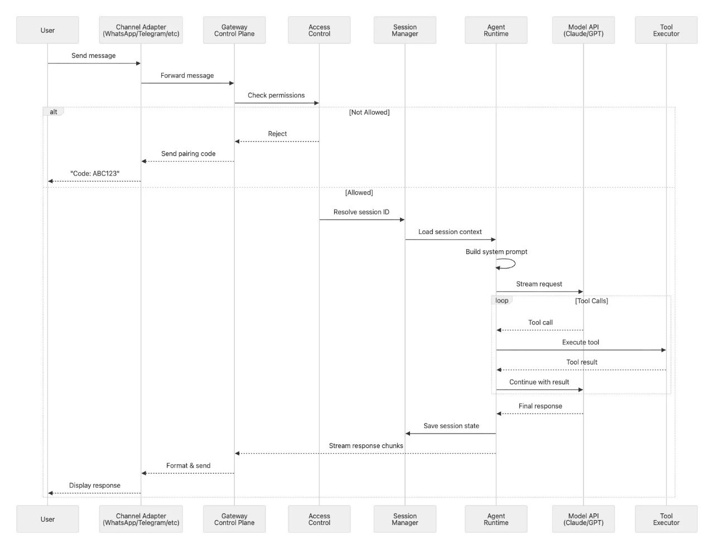
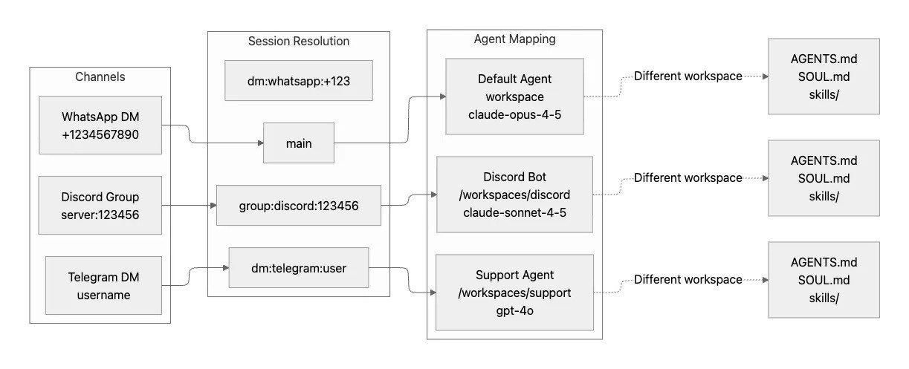
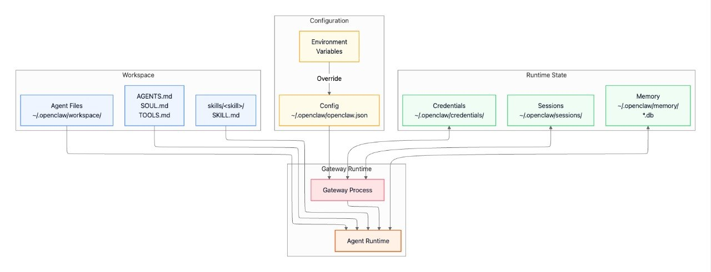

Hi there 👀
Schnellstes wachsendes Open-Source-Projekt? 👀

OpenClaw ging von 0 auf 180K GitHub-Stars in Wochen. Das ist die vertikale Linie. 😄
Deep-Dive von Paolo (Axiom): ppaolo.substack.com
_"In Her, Samantha wasn't an app. She lived inside the OS — always there, everywhere, through any screen."_
Dein Terminal, das zurücktextet
22. April 2026 · Tech Talk
1 / 24Die Lücke: Zugriff ohne am Rechner zu sitzen
Chat Apps → Gateway → Agent → Tools
↓
Sessions
↓
[Shell, Git,
Browser,
Cron...]| 1. Self-hosted = Kontrolle | Keine API-Key-Leaks, kein Vendor-Lock-in, Daten verlassen nie deine Maschine |
|---|---|
| 2. Workflow-Integration | Scripts, CI/CD, Builds aus dem Chat auslösen — /build /deploy |
| 3. Multi-Agent-Routing | Different agents for work, personal, projects — isolated sessions |
| 4. Mobiles Dev-System | Dein Phone wird zur Remote-Entwicklungsumgebung — von überall aus |
OpenClaw ging von 0 auf 180K GitHub-Stars in Wochen. Das ist die vertikale Linie. 😄
Deep-Dive von Paolo (Axiom): ppaolo.substack.com
5 / 24web_search → web_fetch → summarize — done
Write → git add → git commit → git push
Erinnerungen · Builds · Checks · Jede Automatisierung
schedule: every 1 hour
→ systemEvent delivered to chat
┌──────────────────┐
│ Chat Apps │
│ WA · TG · Discord│
└────────┬─────────┘
│
[Gateway]
│
┌────┼────┐
▼ ▼ ▼
[Sessions][Tools][Channels]
│
▼
[Coding Agent]
│
├── Shell
├── Git
├── Browser
└── Cron
extensions/openclaw.extensions in package.json{
channels: {
telegram: {
allowFrom: ["your-id"]
}
}
}
Pi isn't just a chat wrapper. It's designed from the ground up for agentic workflows — tool use, memory search, session management, and streaming responses.
This is what makes OpenClaw different from a chatbot — it's an agent that acts.
Fun fact: "Pi" stands for Personal Intelligence — your agent, your context, your tools.

| Schritt | Latenz |
|---|---|
| Access Control | <10ms |
| Session-Laden | <50ms |
| Prompt-Zusammenbau | <100ms |
| Erstes Token (Modell) | 200-500ms |
| Tool: Bash | <100ms |
| Tool: Browser | 1-3s |
Die meisten Schritte sind blitzschnell. Der Flaschenhals ist immer Modell-Inferenz and Browser-Automatisierung.
Tip: Bash-Tools über Browser wenn möglich 🏃

AGENTS.md, SOUL.md, skillsnpm install -g openclaw@latest
openclaw onboard
openclaw gatewayFünf Minuten. Wirklich.
17 / 24| Komponente | Kosten |
|---|---|
| OpenClaw | Kostenlos (self-hosted) |
| Infrastruktur | ~€15/mo (Railway hobby) |
| Dein Rechner | Schon bezahlt |
OpenClaw selbst = kostenlos · KI-Modelle = eigenen API-Key mitbringen · Hosting = günstig ($5-20/mo) or use your existing machine

Beispiel: "Finde alle ungelesenen E-Mails" → Websuche → Zusammenfassen → Zu Telegram
Live-Demo powered by Clawdia 🦞
23 / 24linkedin.com/in/moritzsontheimer
🦞
23 / 23